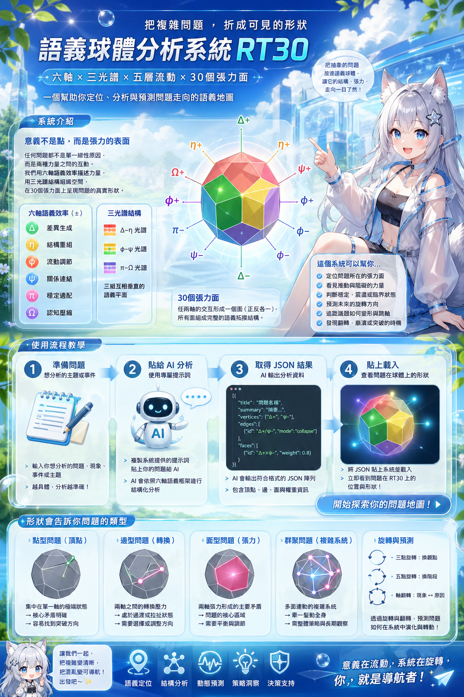
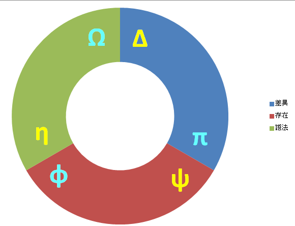
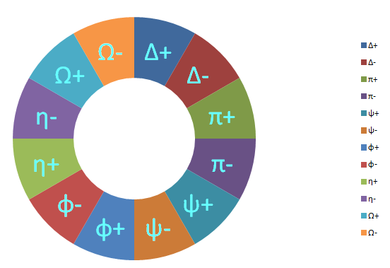

這是什麼
RT30 是一個以菱形三十面體為骨架的語義地圖。它不是把問題放在線上，而是把問題放到兩條力量交會形成的「面」上。
RT30
把複雜問題折成可見的形狀：六條語意軸、十二個方向、三十個張力面，放進一個可以旋轉、觀察、標記的菱形三十面體裡。

RT30 是一個以菱形三十面體為骨架的語義地圖。它不是把問題放在線上，而是把問題放到兩條力量交會形成的「面」上。
六個語意效率形成六軸，每條軸有正負方向。任兩軸的張力會落在一個菱形面上，三十個面組成一個完整的問題表面。
你可以旋轉 3D 球體、查看 2D 展開圖、切換標籤與高亮狀態，觀察問題位於哪個方向、哪種張力、哪個轉換區域。
PDF 裡把 RT30 描述成 Semantic Sphere：一個讓意義、張力與系統行為取得幾何位置的模型。它可以用來觀察問題落在哪些力量之間，是否穩定、震盪、接近翻轉，或正在沿著某種循環移動。
這裡的互動頁先把它當成思考玩具。你不需要先理解整套理論，只要把它打開，旋轉、點選、看高亮如何連動，就能慢慢感覺這個模型想表達的空間感。
RT30 的「面」不是單純的位置，而是排除一組光譜後，由剩下兩組光譜構成的思考空間。換句話說，每個面都像一種觀察問題的視角。
以 Δ 極軸為例，六面可以分成三組：體驗視角、工程視角、抽象視角。每一組都有正反狀態，也能用極性分佈判讀成極端、偏壓或平衡。
你看到的不是圖，而是思考的形狀。

